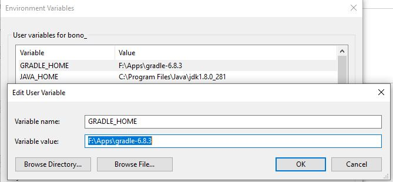
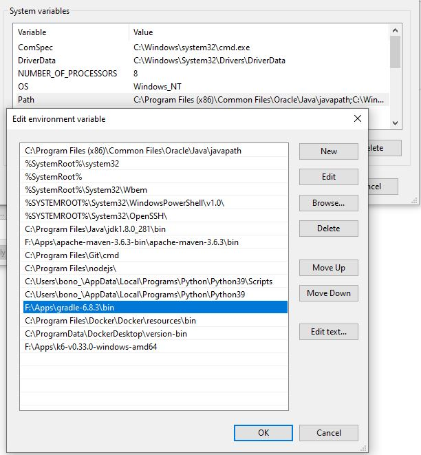
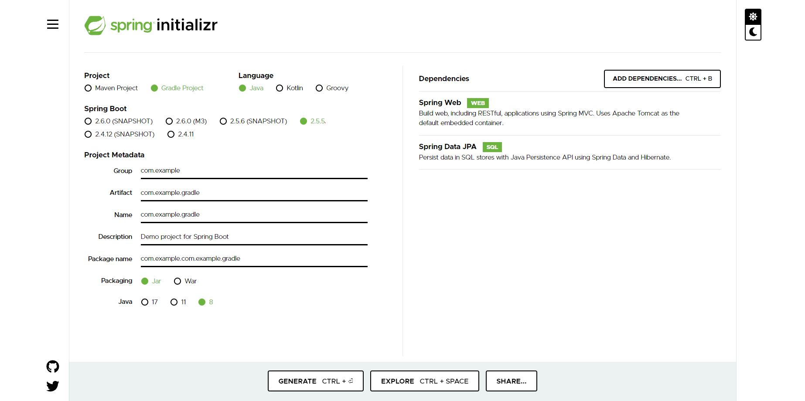

Gradle Introduction#
What Is Gradle?#
Gradleis anopen-source build automationtool that is designed to be flexible enough to build almost any type of software.Build automationis the process of automating the creation of a software build and the associated processes including:compiling computer source code into binary code,packaging binary code, andrunning automated tests.Gradleruns on the JVM and youmust have a Java Development Kit (JDK) installedto use it.- More information
Gradle Installation#
Gradleruns on all major operating systems and requires only aJava Development Kit version 8 or higherto run. To check, runjava -versionon yourcommand prompt.- Then you can go to gradle.org to download the
binary-onlyfollowing the version that you want to use. - After the download is completed, you can extract it at any folder. Then go to
Control Panel->System and Security->System->Advanced system setting->Environment Variables. Then create aGRADLE_HOMEwith value is the path to your gradle folder.

- Then go to
PathinSystem Variables--> ChooseNew-->Browse--> go to the folderbinin yourgradle folder.

- Finally, you can open
cmdand use commandgradle --versionto check your gradle installation. You would see the result as below:
C:\Users\bono_>gradle --version
------------------------------------------------------------
Gradle 6.8.3
------------------------------------------------------------
Build time: 2021-02-22 16:13:28 UTC
Revision: 9e26b4a9ebb910eaa1b8da8ff8575e514bc61c78
Kotlin: 1.4.20
Groovy: 2.5.12
Ant: Apache Ant(TM) version 1.10.9 compiled on September 27 2020
JVM: 1.8.0_281 (Oracle Corporation 25.281-b09)
OS: Windows 10 10.0 amd64
Some Gradle Commands#
| Gradle Commands | Description |
|---|---|
gradle check |
Gradle will execute all checks (for plugins that we added Ex: checkstyle plugin) and tests in all subprojects, but we have to note that when we run this command gradle test will be executed first, if you want to run a specific test you can use gradle :<projectName>:check. Gradle will not show many logs except if there are some errors. This command is the same with mvn verify of Maven |
gradle test |
Gradle will execute all unit tests in all subprojects. This command is the same with mvn test of Maven. |
gradle :<task name> |
Execute a task that defined in the build.gradle. |
gradle :<subproject>:<task Name> |
Execute a task that defined in the build.gradle of a subProject. |
gradle assemble |
This builds whatever is the appropriate package for the project, for example a JAR for Java libraries or a WAR for traditional Java webapps, this command is the same with mvn package of Maven. |
gradle publishToMavenLocal |
this command will crate a package and a depencency of your project into local repository of Maven like the command mvn install. |
gradle build |
this command builds for the build task to designate assembling all outputs and running all checks. |
gradle run |
It is common for applications to be run with the run task, which assembles the application and executes some script or binary. |
gradle clean |
delete the contents of the build directory, this command is like mvn clean of Maven |
gradle tasks |
gives you a list of the main tasks of the selected project |
gradle bootRun |
Runs project as a Spring Boot application. |
gradle <action> -Dorg.gradle.logging.level=debug |
log out everything in the action |
gradle -q projects |
view the structure of project if project contains many subprojects |
- Some Gradle commands: more information
Gradle Build Phases#
- Gradle build phases:
-
Initialization:
settings.gradlethis file will loaded and readed first then the gradle will know to build single or multiple projects. more information. -
Configuration: In this step the build script (build.gradle) will be read and executed.
-
Execution: In this step, if tasks names exist in the build script then they will be executed.
Gradle And Maven Comparison#
Almost of us is familar with
Maven, so I just put some main points aboutMaventhere.
-
Mavenis used forproject build automation using Java. It helps you map out how a particular software is built, as well as its different dependencies. It usesan XML fileto describe the project that you are building, the dependencies of the software with regards to third-party modules and parts, the build order, as well as the needed plugins. There are pre-defined targets for tasks such as packaging and compiling. -
Mavenwill download libraries and plugins from the different repositories and then puts them all in a cache on your local machine. While predominantly used for Java projects, you can use it for Scala, Ruby, and C#, as well as a host of other languages. -
The following table describes the differences between the two tools:
| Basis | Gradle | Maven |
|---|---|---|
| Based on | Gradle is based on developing domain-specific language projects. | Maven is based on developing pure Java language-based software. |
| Configuration | It uses a Groovy-based Domain-specific language(DSL) for creating project structure. | It uses Extensible Markup Language(XML) for creating project structure. |
| Focuses on | Developing applications by adding new features to them. | Developing applications in a given time limit. |
| Performance | It performs better than maven as it optimized for tracking only current running task. | It does not create local temporary files during software creation hence uses large time. |
| Java Compilation | It avoids compilation. | It is necessary to compile. |
| Usability | It is a new tool, which requires users to spend a lot of time to get used to it. | This tool is a known tool for many users and is easily available. |
| Customization | This tool is highly customizable as it supports a variety of IDE’s. | This tool serves a limited amount of developers and is not that customizable. |
| Languages supported | It supports software development in Java, C, C++, and Groovy. | It supports software development in Scala, C#, and Ruby. |
-
Some corresponding commands between
MavenandGradle
| MAVEN | GRADLE |
|---|---|
compile |
compile |
provided |
compileOnly, testCompileOnly (*) |
system |
|
runtime |
runtime |
test |
testCompile, testRuntime |
Create A Sample Gradle Project With Spring Boot#
- You can go to this page to generate a gradle project with spring boot as the example in the image below.
